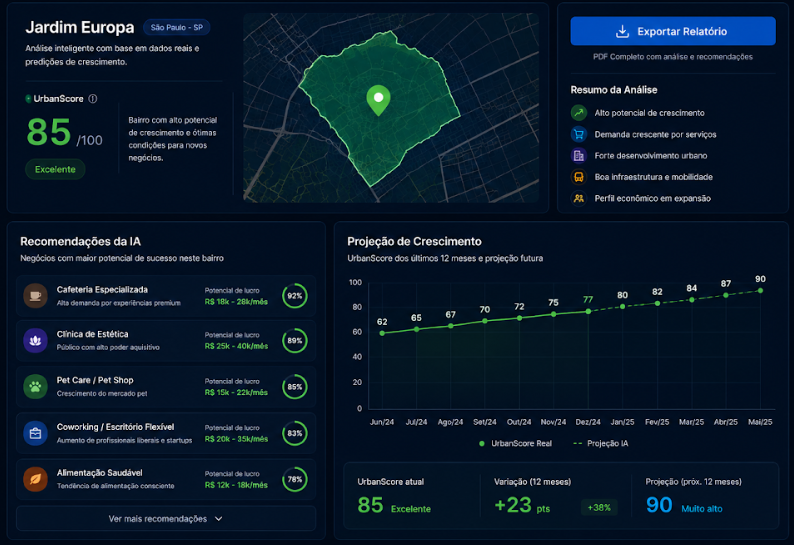
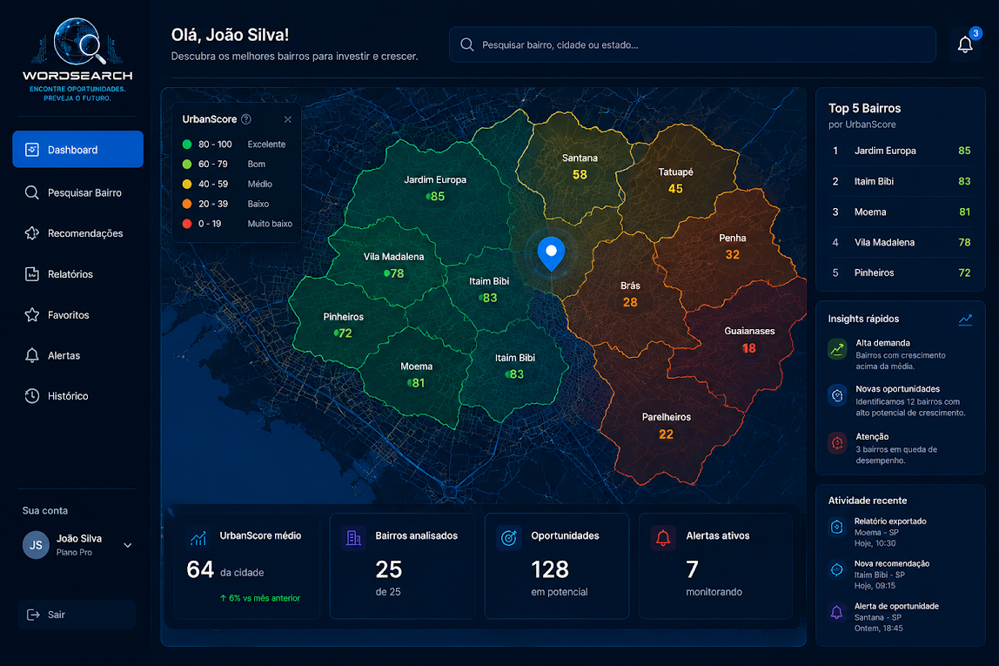

Visualize oportunidades em segundos
O WORDSEARCH transforma milhares de dados urbanos em mapas intuitivos e insights acionáveis.
- ✓ Ranking dos melhores bairros
- ✓ Alertas automáticos
- ✓ Tendências de valorização
- ✓ Dados em tempo real
Analise bairros, identifique tendências de crescimento e receba recomendações inteligentes para investir ou abrir negócios com maior potencial de sucesso.

Analise bairros usando dados econômicos, mobilidade urbana e crescimento populacional.
Nossa IA gera uma pontuação exclusiva para identificar regiões promissoras.
Descubra oportunidades antes da concorrência.
O WORDSEARCH transforma milhares de dados urbanos em mapas intuitivos e insights acionáveis.

Nossa inteligência artificial identifica quais negócios possuem maior chance de sucesso em cada região.
Tome decisões mais inteligentes usando dados reais.